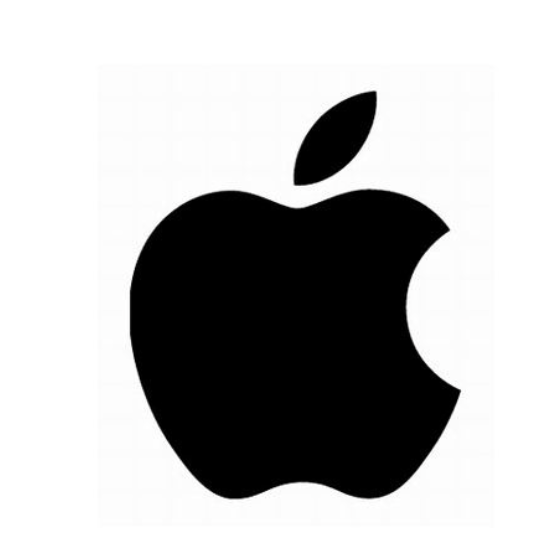
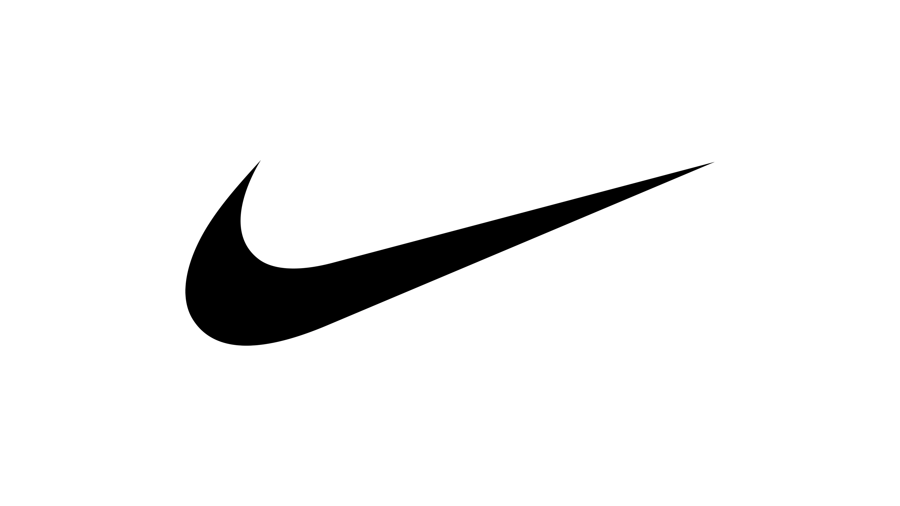
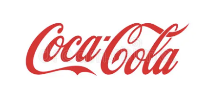
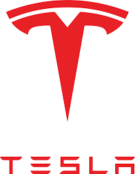
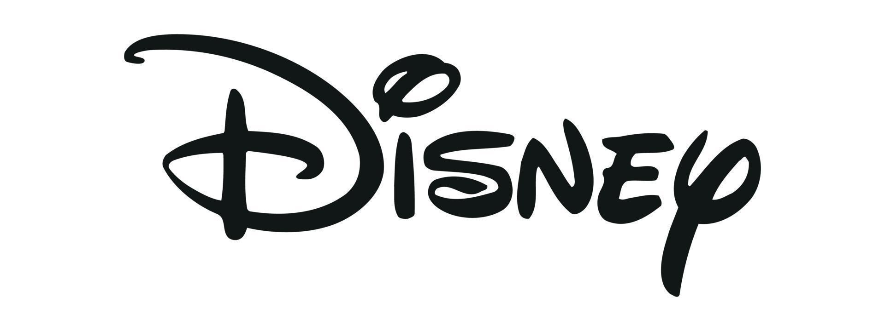
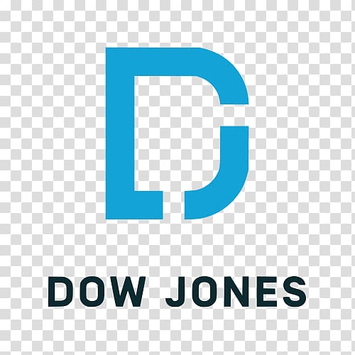

Stock Analysis

Apple (AAPL)
Industry: Technology
Rating: ★★★★☆
What the company does: Apple is a technology company best known for the iPhone, MacBook, iPad, Apple Watch, and services like Apple Music and iCloud.
Why I chose it: I chose Apple because it is one of the most well-known companies in the world and has a very loyal customer base.
Strength: Apple has a powerful brand, strong product demand, and large cash flow.
Risk: One risk is that Apple still depends heavily on iPhone sales.
My View: I think Apple is a strong long-term company because it continues to grow while keeping a very strong reputation.

Amazon (AMZN)
Industry: Technology / Retail
Rating: ★★★★☆
What the company does: Amazon is a major online shopping company, but it also makes money from cloud computing, streaming, and delivery services.
Why I chose it: I chose Amazon because it has changed the way people shop and has become one of the biggest businesses in the world.
Strength: Amazon is strong because of its size, wide range of services, and leadership in online retail and cloud computing.
Risk: A risk is that Amazon faces a lot of pressure from competition and changing consumer spending.
My View: I think Amazon is a very important company to follow because it is involved in many parts of the economy.

Microsoft (MSFT)
Industry: Technology
Rating: ★★★★★
What the company does: Microsoft develops software, cloud services, and technology products such as Windows, Office, Xbox, and Azure.
Why I chose it: I chose Microsoft because it is one of the biggest technology companies and plays a big role in both business and everyday life.
Strength: Microsoft is strong because of its steady growth, cloud business, and importance in workplaces around the world.
Risk: A risk is that technology companies face constant competition and changing trends.
My View: I think Microsoft is a very strong long-term stock because it has many successful products and services.

Nike (NKE)
Industry: Consumer / Apparel
Rating: ★★★★☆
What the company does: Nike is a global sportswear company that sells shoes, clothing, and athletic equipment.
Why I chose it: I chose Nike because it is a powerful brand that many people around the world recognize.
Strength: Nike has strong brand recognition and a worldwide customer base.
Risk: A risk is that sales can slow when consumers spend less money.
My View: I think Nike is a good company to study because it connects business, marketing, and consumer behavior.
Morgan Stanley (MS)
Industry: Financial Services
Rating: ★★★★☆
What the company does: Morgan Stanley is a major financial company involved in investment banking, wealth management, and market services.
Why I chose it: I chose Morgan Stanley because I want to learn more about finance and better understand how major financial firms operate.
Strength: Morgan Stanley has a strong reputation and a major role in both investment banking and wealth management.
Risk: A risk is that financial companies can be affected by market uncertainty and economic downturns.
My View: I think Morgan Stanley is a strong finance stock to study because it shows how banks and markets connect.

Coca-Cola (KO)
Industry: Beverage
Rating: ★★★★☆
What the company does: Coca-Cola is a global beverage company that sells soft drinks, water, juices, and sports drinks.
Why I chose it: I chose Coca-Cola because it is one of the most recognizable brands in the world.
Strength: Coca-Cola has a very strong global brand and consistent demand.
Risk: A risk is that changing health trends may affect demand for some of its products.
My View: I think Coca-Cola is a reliable company to study because it shows how strong branding can lead to long-term success.

Tesla (TSLA)
Industry: Automotive / Energy
Rating: ★★★☆☆
What the company does: Tesla makes electric vehicles, batteries, and energy products.
Why I chose it: I chose Tesla because it is one of the most talked-about companies in the market and has changed the car industry.
Strength: Tesla is known for innovation and strong influence in electric vehicles.
Risk: A risk is that Tesla can be very volatile and faces strong competition.
My View: I think Tesla is an interesting stock because it has high growth potential but also more risk than some other companies.

Disney (DIS)
Industry: Entertainment
Rating: ★★★★☆
What the company does: Disney is a global entertainment company involved in movies, streaming, theme parks, and media.
Why I chose it: I chose Disney because it is one of the strongest entertainment brands in the world.
Strength: Disney has many business segments and a very powerful brand name.
Risk: A risk is that entertainment demand and streaming competition can affect performance.
My View: I think Disney is a strong company to analyze because it combines media, business, and global consumer appeal.

Dow Jones (DJIA)
Industry: Market Index
Rating: ★★★★☆
What it is: The Dow Jones Industrial Average tracks 30 major U.S. companies and is often used as a measure of the overall market.
Why I chose it: I chose the Dow Jones because it helps me understand how large companies perform together.
Strength: It gives a broad view of major U.S. businesses.
Risk: A risk is that it only tracks 30 companies, so it does not represent the entire market.
My View: I think the Dow is important to follow because it helps show overall market trends.

S&P 500 (SPY)
Industry: ETF / Market Index
Rating: ★★★★★
What it is: The S&P 500 tracks 500 of the largest U.S. companies and gives a broad picture of the stock market.
Why I chose it: I chose the S&P 500 because it is one of the best ways to understand the overall U.S. market.
Strength: It is diversified and represents many industries.
Risk: A risk is that if the overall market falls, the S&P 500 usually falls too.
My View: I think the S&P 500 is one of the strongest things to study because it reflects the market as a whole.
Boeing (BA)
Industry: Aerospace
Rating: ★★★☆☆
What the company does: Boeing is a major aerospace company that makes airplanes, defense products, and space technology.
Why I chose it: I chose Boeing because it is one of the most important companies in the industrial and aerospace sectors.
Strength: Boeing has a major role in aviation and defense, which gives it long-term importance.
Risk: A risk is that Boeing can be affected by safety issues, production delays, and travel demand.
My View: I think Boeing is an interesting stock because it shows how industrial companies can have both great opportunity and major risk.
Google (GOOGL)
Industry: Technology
Rating: ★★★★★
What the company does: Google is a technology company known for search, advertising, YouTube, cloud services, and artificial intelligence.
Why I chose it: I chose Google because it plays a huge role in the digital world and continues to grow in different areas.
Strength: Google has strong advertising revenue and major influence in technology.
Risk: A risk is that it faces government regulation and strong competition in tech.
My View: I think Google is one of the strongest companies to study because it affects so many parts of modern life.

NVIDIA (NVDA)
Industry: Technology / AI
Rating: ★★★★☆
What the company does: NVIDIA designs computer chips that are important for gaming, artificial intelligence, and data centers.
Why I chose it: I chose NVIDIA because it has become one of the most important companies in the growth of AI.
Strength: NVIDIA is a leader in chips used for advanced technology and AI systems.
Risk: A risk is that fast growth can also lead to high expectations and market volatility.
My View: I think NVIDIA is a very interesting company because it is at the center of one of the fastest-growing areas in technology.

JPMorgan Chase (JPM)
Industry: Financial
Rating: ★★★★☆
What the company does: JPMorgan Chase is one of the largest banks in the world and provides banking, investing, and financial services.
Why I chose it: I chose JPMorgan because it is one of the strongest and most stable companies in finance.
Strength: JPMorgan has a large global presence and strong financial position.
Risk: A risk is that banks are affected by interest rates, economic conditions, and market performance.
My View: I think JPMorgan is a strong company to analyze because it shows how large banks influence the economy.

McDonald's (MCD)
Industry: Consumer / Food
Rating: ★★★★☆
What the company does: McDonald’s is a global fast-food company with restaurants around the world.
Why I chose it: I chose McDonald’s because it is one of the most recognizable and consistent global brands.
Strength: McDonald’s has a strong business model and dependable customer demand.
Risk: A risk is that changing food trends and costs can affect performance.
My View: I think McDonald’s is a good company to study because it shows how strong branding and consistency can lead to long-term success.